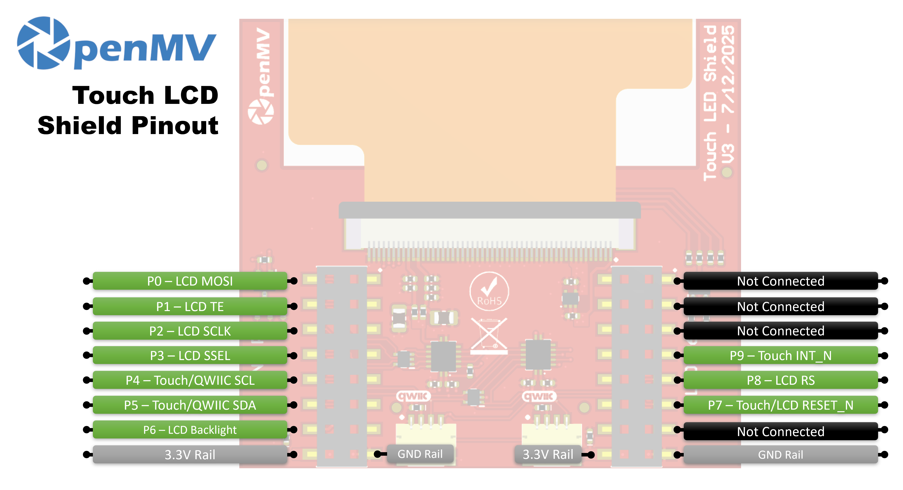

Touch LCD Shield¶
The Touch LCD Shield gives the OpenMV Cam a 2.3 inch 320x240 capacitive multi-touch display so you can preview the camera output (and accept input) without a host computer. Two Qwiic headers make it easy to chain extra I2C devices.

For full datasheet, photos, and ordering see the Touch LCD Shield product page.
Highlights¶
2.3 inch TFT LCD, 320x240, 16-bit RGB565
Capacitive multi-touch input
PWM-controllable backlight
Two Qwiic connectors for easy I2C device chaining
Pinout¶
{kind=link}

Pin reference¶
Pin |
Function |
|---|---|
P0 |
LCD MOSI (SPI data to display) |
P1 |
LCD TE (tearing-effect output) |
P2 |
LCD SCLK (SPI clock) |
P3 |
LCD SSEL (SPI chip select) |
P4 |
Touch / Qwiic SCL (I²C clock — shared with Qwiic headers) |
P5 |
Touch / Qwiic SDA (I²C data — shared with Qwiic headers) |
P6 |
LCD backlight |
P7 |
Touch / LCD RESET_N |
P8 |
LCD RS (data / command select) |
P9 |
Touch INT_N |
3.3V rail |
Powers the LCD and touch controllers |
GND rail |
Common ground |
Usage¶
Drive the shield through the display.SPIDisplay class.
Stream camera frames to the 320×240 LCD:
import csi
import time
import display
import image
csi0 = csi.CSI()
csi0.reset()
csi0.pixformat(csi.RGB565)
csi0.framesize(csi.QVGA)
lcd = display.SPIDisplay(width=320,
height=240,
bgr=True,
vflip=False,
hmirror=False)
clock = time.clock()
while True:
clock.tick()
lcd.write(csi0.snapshot(), hint=image.CENTER | image.SCALE_ASPECT_KEEP)
print(clock.fps())
Drive the backlight via PWM for adjustable brightness. Wrap
machine.PWM in a small backlight controller class and pass
it to SPIDisplay through its backlight
argument — SPIDisplay calls backlight(value) on
the object whenever it needs to update the level:
import csi
import time
import display
import image
from machine import Pin, PWM
class PWMBacklight:
"""Drives a backlight pin with machine.PWM (0–100 %)."""
def __init__(self, pin, frequency=200):
self._pwm = PWM(Pin(pin), freq=frequency, duty_u16=0)
def backlight(self, value):
self._pwm.duty_u16(int(value * 65535 / 100))
def deinit(self):
self._pwm.deinit()
csi0 = csi.CSI()
csi0.reset()
csi0.pixformat(csi.RGB565)
csi0.framesize(csi.QVGA)
lcd = display.SPIDisplay(width=320,
height=240,
bgr=True,
vflip=False,
hmirror=False,
backlight=PWMBacklight("P6"))
lcd.backlight(50) # 0–100
clock = time.clock()
while True:
clock.tick()
lcd.write(csi0.snapshot(), hint=image.CENTER | image.SCALE_ASPECT_KEEP)
print(clock.fps())
Read multi-touch input from the on-board FT6x36 capacitive controller — wired to the camera’s I²C bus on P4/P5 with reset on P7 and IRQ on P9. The example below pairs touch with live camera streaming, drawing a red circle on the LCD wherever a finger is pressed:
from time import sleep_ms
from array import array
from machine import Pin, SoftI2C
import csi
import display
import image
import time
_DEFAULT_ADDR = const(0x38)
_DEV_MODE = const(0x00)
_TD_STATUS = const(0x02)
class FT6X36:
FLAG_PRESSED = 0
FLAG_RELEASED = 1
FLAG_MOVED = 2
def __init__(
self,
bus,
reset_pin,
irq_pin,
address=_DEFAULT_ADDR,
width=320,
height=240,
reverse_x=False,
reverse_y=False,
touch_callback=None,
):
self.bus = bus
self.address = address
self.width = width
self.height = height
self.reverse_x = reverse_x
self.reverse_y = reverse_y
self.touch_callback = touch_callback
# reset_pin=None skips the reset pulse — useful when another
# peripheral on the same line (e.g. the LCD) has already done it.
if reset_pin is not None:
self.rst_pin = Pin(reset_pin, Pin.OUT_PP, value=0)
else:
self.rst_pin = None
self.irq_pin = None
self.irq_pin_label = irq_pin
# Reset the touch panel controller.
self.reset()
# Put the controller into normal operating mode.
self._write_reg(_DEV_MODE, 0x00)
# Scratch buffer for points (x, y, flag, id) — chip max 2.
self.points_data = [array("H", [0, 0, 0, 0]) for _ in range(2)]
self._touch_points_old = 0
self._touch_points = 0
def _read_reg(self, reg, size=1, buf=None):
# FT6X36 expects two separate START/STOP transactions
# (no repeated start), so don't use readfrom_mem here.
self.bus.writeto(self.address, bytes([reg]))
if buf is not None:
self.bus.readfrom_into(self.address, buf)
else:
return self.bus.readfrom(self.address, size)
def _write_reg(self, reg, val, size=1):
if size == 1:
buf = bytes([reg, val & 0xFF])
else:
buf = bytes([reg, val & 0xFF, val >> 8])
self.bus.writeto(self.address, buf)
def reset(self):
if self.irq_pin is not None:
self.irq_pin.irq(handler=None)
if self.rst_pin is not None:
self.rst_pin(0)
sleep_ms(1)
self.rst_pin(1)
sleep_ms(39)
self.irq_pin = Pin(self.irq_pin_label, Pin.IN, Pin.PULL_UP)
if self.touch_callback is not None:
self.irq_pin.irq(
handler=self.touch_callback,
trigger=Pin.IRQ_FALLING,
hard=False,
)
def read_points(self):
regs = self._read_reg(_TD_STATUS, 13)
n_points = min(regs[0] & 0x0F, 2)
for i in range(0, n_points):
base = 1 + i * 6
x = ((regs[base] & 0xF) << 8) | regs[base + 1]
y = ((regs[base + 2] & 0xF) << 8) | regs[base + 3]
if self.reverse_x:
x = self.width - 1 - x
if self.reverse_y:
y = self.height - 1 - y
self.points_data[i][0] = x
self.points_data[i][1] = y
self.points_data[i][2] = regs[base] >> 6
self.points_data[i][3] = regs[base + 2] >> 4
# Mark previously-active slots as released so the caller
# sees a release event after a finger lifts.
for i in range(n_points, 2):
self.points_data[i][2] = self.FLAG_RELEASED
# Latch touch count: rising immediate, falling debounced one read.
if n_points >= self._touch_points:
self._touch_points = n_points
elif n_points <= self._touch_points_old:
self._touch_points = self._touch_points_old
self._touch_points_old = n_points
return self._touch_points, self.points_data
csi0 = csi.CSI()
csi0.reset()
csi0.pixformat(csi.RGB565)
csi0.framesize(csi.QVGA)
lcd = display.SPIDisplay(width=320,
height=240,
bgr=True,
vflip=False,
hmirror=False)
# The LCD and touch controllers share P7 as a reset line. The LCD
# has already pulsed it during its own init, so init the touch
# controller after with reset_pin=None to skip a redundant pulse.
bus = SoftI2C(scl=Pin("P4"), sda=Pin("P5"), freq=100_000)
touch = FT6X36(bus, reset_pin=None, irq_pin="P9", reverse_y=True)
clock = time.clock()
# Some sensors return less than 240 lines at QVGA (e.g. 320x200 on
# the N6). The display centers the frame, so map touch Y to image Y.
y_offset = (touch.height - csi0.height()) // 2
while True:
clock.tick()
img = csi0.snapshot()
n, points = touch.read_points()
for i in range(n):
x, y, flag, tid = points[i]
if flag != FT6X36.FLAG_RELEASED:
iy = y - y_offset
if 0 <= iy < csi0.height():
img.draw_circle(
(x, iy, 18), color=(255, 0, 0), thickness=2
)
lcd.write(img, hint=image.CENTER | image.SCALE_ASPECT_KEEP)
print(clock.fps())